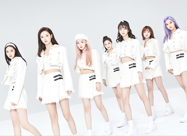
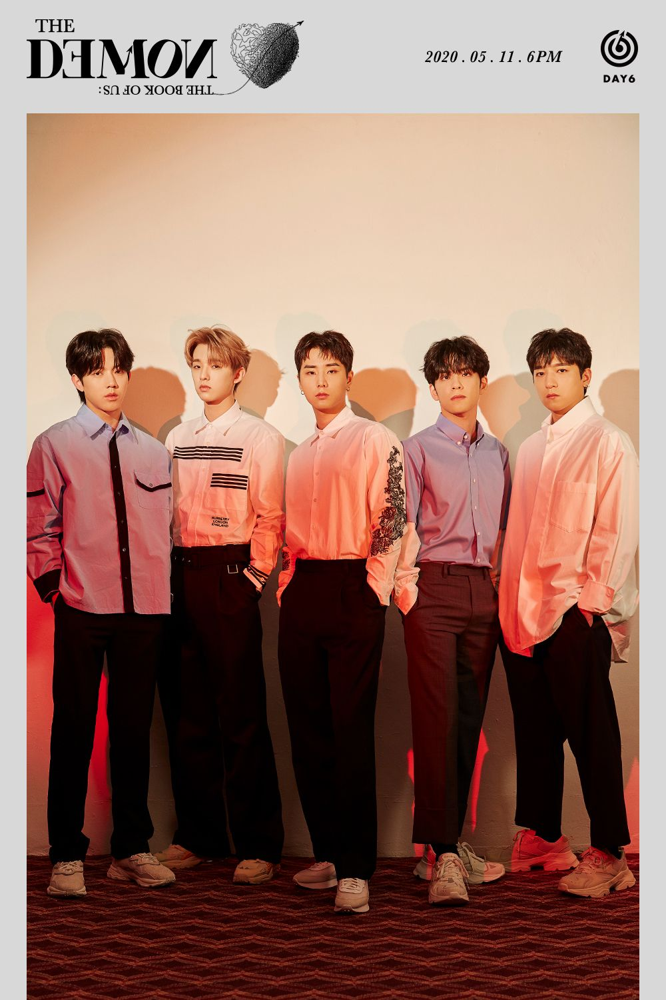
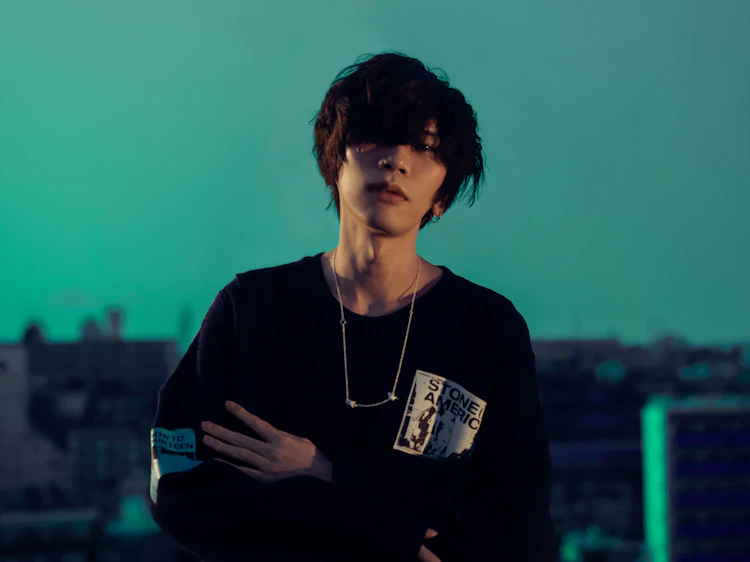
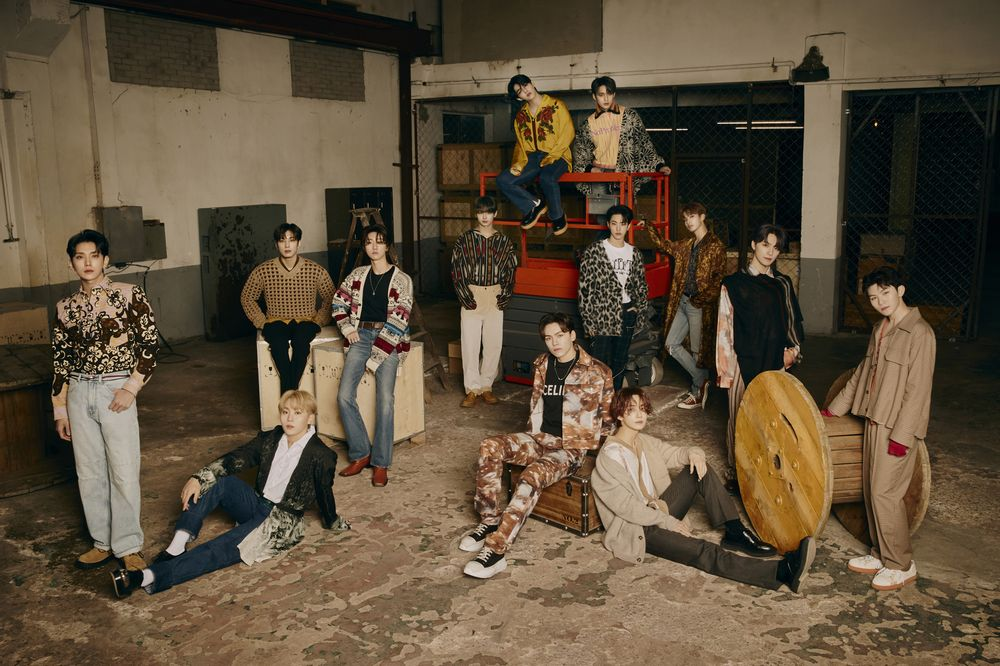

love_singer

오마이걸은 대한민국의 소속사 WM 엔터테인먼트 소속의 7인조 걸 그룹이다.
원래는 8인 체재였으나,
2017년 멤버 진이가 건강문제로 탈퇴하여, 7인 체재로 바뀌었다.

DAY6는 성진, Jae, Young K, 원필, 도운으로 구성된 5인조 남성 밴드이다. 현재 멤버 성진은 병역을 이행 중에 있다.

요네즈 켄시는 일본 도쿠시마현 출신의 뮤지션, 싱어송라이터, 일러스트레이터, 비디오그래퍼이다.
소속 레이블은 유니버설 시그마→소니 뮤직 레코드이며, 다른 명의는 하치이다.

세븐틴은 플레디스 엔터테인먼트 소속으로 2015년 5월 26일에 데뷔한 대한민국의 13인조 보이 그룹이다.
그룹 내에는 퍼포먼스, 보컬, 힙합팀이 존재한다.